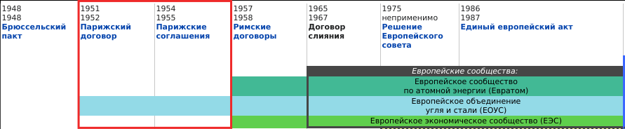

Created: 2020-12-18 Fri 11:19
воссоздать европейскую семью и по мере возможности придать ей структуру, позволяющую жить в мире и наслаждаться свободой. Для этого нужно создать нечто вроде Соединенных Штатов Европы – Уинстон Черчилль
9 мая 1950г.
Figure 3: Роберт Шуман
25 июля 1952г.

25 марта 1957г.
Figure 6: Жан Монне
8 апреля 1965г.
Figure 8: Шарль Де Голль
17, 28 февраля 1986г.
Figure 10: Жак Делор
7 февраля 1992г.